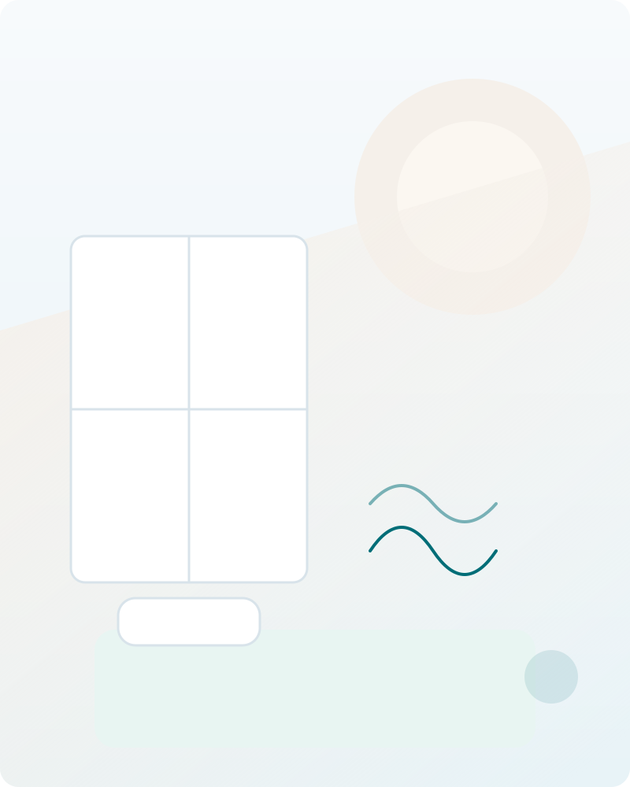

Думки прискорюються після вимкнення світла
Тіло втомлене, але щойно стає тихо — вмикається аналіз дня, роботи й завтрашніх ризиків.
6 тижнів · один ранковий чек-ін · у Telegram
Dormeza допомагає крок за кроком змінювати думки та звички, які можуть підтримувати проблеми зі сном. Програма побудована за структурою CBT-I і щодня адаптує рекомендації до даних вашого щоденника сну.
А якщо скринінг покаже ознаки порушення дихання уві сні — ви не залишаєтесь наодинці: для цього є окремий маршрут з обстеженням, лікарем і підбором капи MAD або СІПАП-апарата.
Безкоштовне анкетування 5–7 хвилин у Telegram. Оплата — лише якщо формат вам підходить.
42 дні 1 платіж без підписки без призначення ліків

Ранковий чек-ін · 3 хв
12–15 коротких відповідей про минулу ніч і попередній день
Тіло втомлене, але щойно стає тихо — вмикається аналіз дня, роботи й завтрашніх ризиків.
Ви прокидаєтесь і починаєте рахувати, скільки годин ще залишилося до будильника.
Ще звечора з'являється очікування, що все повториться. І саме це очікування заважає.
Ритуали, добавки, «гігієна сну» — і за тиждень усе повертається до попереднього стану.
Сон став непередбачуваним, а сама думка «треба лягати» вже викликає внутрішній спротив.
Ви спите достатньо годин, але прокидаєтесь розбитим. Близькі кажуть про хропіння або паузи в диханні. Це вже інша історія — і вона теж має свій маршрут.
Це не означає, що ви «не вмієте спати». Часто проблему підтримує коло з напруження, очікування поганої ночі й поведінки, яка ненавмисно закріплює цей сценарій. Але причини порушень сну бувають різними — саме тому все починається зі скринінгу, а не з продажу.
Хронічне безсоння рідко тримається на одній причині. Найчастіше воно замикається в коло, де кожна ланка підсилює наступну.
Коло замикається — і наступна ніч починається вже з очікування невдачі.
Стабільний час підйому як опора для біологічного ритму.
Відновлення зв'язку між ліжком і засинанням, а не між ліжком і очікуванням.
Обережне налаштування часу в ліжку так, щоб сон став суцільнішим.
Робота з катастрофічними прогнозами та постійним контролем сну.
Причини порушень сну бувають різними. Саме тому до оплати програма проводить скринінг.
Основний продукт — структурована 42-денна програма самодопомоги в Telegram. Нижче — без прикрас, що входить у цей формат і що до нього не належить.
Повний цикл супроводу
Безсоння і порушення дихання уві сні — це різні проблеми з різними рішеннями. Небезпечно лікувати одне методами іншого. Тому скринінг спочатку визначає, який маршрут вам підходить, і лише потім пропонує наступний крок.
4 900 грн · один платіж за 42 дні
Коли сон порушується переважно через думки, звички та поведінку навколо сну, а можливість спати в принципі є.
Оплачується окремо · залежить від обраного етапу
Коли відповіді вказують на можливе обструктивне апное сну: хропіння, паузи дихання, нічна задуха, денна сонливість. Програма Сон 6 у цьому випадку не продається.
Маршрути можуть поєднуватися. Безсоння й апное нерідко співіснують: тоді спочатку розбираються з диханням під наглядом лікаря, а поведінкову частину додають тоді, коли це безпечно. Це рішення приймає лікар, а не алгоритм.
Рекомендації змінюються тому, що змінюються ваші дані. Ось із чого це складається.
Час засинання й пробудження, періоди неспання вночі, самопочуття та чинники попереднього дня.
Загальний час сну, час у ліжку, ефективність сну та стабільність графіка. Розрахунки виконує код, а не мовна модель.
Програма враховує поточний тиждень, виконання рекомендацій і правила безпеки, затверджені заздалегідь.
Ви отримуєте короткий висновок, одну головну дію на день і пояснення, чому саме це.
Формула щоденної відповіді: що бачимо → що це може означати → що зробити сьогодні → коли потрібна додаткова допомога.
Уся щоденна взаємодія — це коротка ранкова анкета. Ви відповідаєте про минулу ніч і попередній день, а програма рахує показники й формує план на наступну ніч.
Базовий чек-ін займає близько 2–3 хвилин: 12–15 коротких відповідей і до двох уточнень лише тоді, коли вони справді потрібні. Вечірнього діалогу немає — тільки одне коротке нагадування про ваше вікно сну.
Приклад інтерфейсу. Показані дані умовні, персональна інформація не використовується.
Послідовність фіксована: кожен наступний крок спирається на дані попереднього тижня.
Базова картина, щоденник, фіксований час підйому та правила безпеки. Персональні зміни не вводяться, доки не набереться достатньо записів.
Контроль стимулів: що робити, коли сон не приходить, і як припинити «доспівувати» вранці.
Персональне вікно сну. Зміни лише поступові й лише за затвердженими порогами ефективності та денного стану.
Робота з очікуваннями, катастрофізацією та постійним контролем сну. Перенесення вирішення проблем із ліжка на день.
Практичні навички для тіла й уваги, стабілізація вихідних, аналіз індивідуальних тригерів.
План дій при одній поганій ночі й при погіршенні на кілька днів, повторна оцінка симптомів, фінальний звіт.
Маршрут B
Обструктивне апное сну — це не «сильне хропіння». Це повторювані зупинки дихання, через які сон перестає відновлювати, а серце й судини працюють у перевантаженні. Поведінкова програма тут не допоможе, а обмеження часу в ліжку може нашкодити. Тому маршрут інший.
Ті самі 5–7 хвилин у Telegram. Питання про хропіння, паузи дихання, денну сонливість, тиск, вагу, шию.
Організовуємо респіраторне дослідження вдома або скеровуємо в лабораторію сну. Прилад видається на одну ніч.
Результат розшифровує ліцензований лікар. Він визначає тяжкість і те, який метод вам показаний.
За призначенням лікаря — внутрішньоротова капа MAD або СІПАП-апарат із маскою відповідного типу.
Найскладніший етап. Супроводжуємо перші тижні: посадка маски, тиск, побічні відчуття, контрольний огляд.
Індивідуальна капа, яка утримує нижню щелепу трохи попереду й не дає диханню перекриватися. Виготовляється за зліпками ліцензованим лікарем-стоматологом.
Зазвичай розглядається при легкому та середньому апное, при непереносимості СІПАП і при вираженому позиційному компоненті. Рішення завжди за лікарем.
Подає повітря під тиском і механічно утримує дихальні шляхи відкритими. Основний метод при середньому та тяжкому апное.
Ми допомагаємо підібрати апарат і маску під ваше обличчя, тип дихання та бюджет, налаштувати за призначенням лікаря і пройти адаптацію.
Програма побудована на компонентах CBT-I — структурованого когнітивно-поведінкового підходу до безсоння. Професійні настанови AASM і VA/DoD рекомендують CBT-I для дорослих із хронічним безсонням. Шеститижневі цифрові програми зі щоденником сну й персоналізованими рекомендаціями вже використовуються та оцінюються в міжнародній практиці.
AASM щодо поведінкових і психологічних методів лікування хронічного безсоння; VA/DoD 2025 щодо безсоння та обструктивного апное сну.
NICE HTG624 — оцінка шеститижневої цифрової CBT-I програми зі щоденником сну та персоналізацією.
Клінічні посібники CBT-I, стандартизований щоденник сну Consensus Sleep Diary та внутрішня бібліотека проєкту.
Скринінг не встановлює діагноз. Він потрібний, щоб не пропонувати автоматизований формат там, де безпечніше почати з лікаря. Це єдина причина, чому оплата стоїть після анкети, а не перед нею.
Ви отримуєте пояснення результату, зміст програми, ціну й можливість оплатити. Формулювання завжди обережне: «за відповідями цей формат може вам підходити».
Якщо відповіді вказують на можливе апное, значну денну сонливість, інший розлад сну або складний медичний чи психічний стан — програма Сон 6 не пропонується. Замість продажу ви отримуєте зрозумілий маршрут: до якого спеціаліста звертатися і що можна організувати через Dormeza.
У кризовій ситуації сценарій продажу зупиняється повністю. Показуються екстрені номери та рекомендація не залишатися наодинці.
При думках про самогубство чи самопошкодження, гострому психічному стані або засинанні за кермом телефонуйте 112 або 103, зверніться до близької людини й не залишайтеся наодинці. Не чекайте на відповідь бота.
Це не повний перелік — повний відбір відбувається в анкеті до оплати. Але основне:
Якщо під час скринінгу або проходження програми з'являться ознаки, що потребують медичної оцінки, ви отримаєте пояснення й варіанти наступного кроку. За окремою згодою можна сформувати резюме зібраних даних і передати його обраному партнерському лікарю. Його консультація та супровід оплачуються окремо.
Структурована анкета до оплати з детермінованим рішенням про допуск.
Початкові правила й розклад, побудовані на ваших перших записах.
Щоденний щоденник сну з автоматичним розрахунком ключових показників.
Одна головна дія на день і підтвердження вікна сну на наступну ніч.
Матеріали й вправи тижня в коротких зрозумілих форматах.
Оцінка динаміки й коригування плану за затвердженим алгоритмом.
Звіт про прогрес і персональний план підтримання результату.
Питання доступу, оплати й роботи бота — без тлумачення медичних відповідей.
Ціна фіксована й не залежить від того, скільки повідомлень ви надішлете. Підписки й автоматичного списання немає.
5 900 грн
4 900 грн
за всі 42 дні програми Dormeza Сон 6
Спочатку безкоштовний скринінг у Telegram. Оплата доступна лише після проходження відбору.
Це різні послуги з різними виконавцями, тому вони не змішуються в одну суму:
| Етап | Хто надає |
|---|---|
| Домашнє респіраторне дослідження | партнерська лабораторія або сервіс |
| Консультація й діагноз | ліцензований лікар |
| Капа MAD | лікар-стоматолог і зуботехнічна лабораторія |
| СІПАП-апарат і маска | постачальник обладнання |
| Супровід адаптації від Dormeza | Dormeza |
Ціни цих етапів залежать від обраного партнера й моделі обладнання. Ви бачите їх до оплати, окремими позиціями. Детальніше — на сторінці маршруту апное.
У програмі Сон 6 — ні. Основна програма повністю автоматизована: лікар, психолог або коуч не беруть участі в щоденному супроводі. За окремою згодою й оплатою можна звернутися до партнерського або будь-якого іншого обраного лікаря. У маршруті апное лікар, навпаки, є обов'язковим: без нього немає ні діагнозу, ні призначення.
Ні. Анкетування оцінює, чи відповідає ваша ситуація правилам програми і чи немає причин спочатку звернутися до спеціаліста. Це скринінг, а не діагностика. Діагноз може встановити лише лікар.
Наступні рекомендації залежать від щоденника сну, розрахованої динаміки, попередніх відповідей, виконання вправ і правил безпеки. Рішення про зміну вікна сну приймається за заздалегідь затвердженим алгоритмом, а не довільно.
Зазвичай 2–3 хвилини на ранковий чек-ін плюс короткий матеріал або вправа відповідного тижня. Вечірньої анкети немає.
Не змінювати їх самостійно. Програма не призначає й не скасовує препарати. Питання медикаментів обговорюйте з лікарем, який їх призначив. Про нещодавні зміни лікування потрібно повідомити в анкеті — це впливає на допуск.
До програми Сон 6 — ні, доки не буде медичної оцінки. Обмеження часу в ліжку при неліковано́му апное може посилити денну сонливість і бути небезпечним. Але маршрут для вас є: скринінг, домашнє респіраторне дослідження, консультація лікаря і, за призначенням, підбір капи MAD або СІПАП-апарата із супроводом адаптації.
Капа MAD утримує нижню щелепу трохи попереду, звільняючи дихальні шляхи; СІПАП подає повітря під тиском і механічно тримає їх відкритими. Капу частіше розглядають при легкому й середньому апное або при непереносимості СІПАП, апарат — при середньому й тяжкому. Обирати за статтею в інтернеті не можна: рішення приймає лікар за результатом дослідження, а ми допомагаємо реалізувати це рішення й пройти адаптацію.
Ні. Реакція людей відрізняється. Програма дає структурований, доказово обґрунтований маршрут, а результат залежить від вихідної ситуації та реальної участі людини. Ми не використовуємо чужі відсотки ефективності як власні результати.
Така тривалість дає змогу зібрати достатньо даних, послідовно опрацювати поведінкові й когнітивні механізми та сформувати план підтримки змін. Коротший формат зазвичай не встигає пройти всі компоненти безпечно.
Ні. 4 900 грн — один платіж за 42 дні. Автоматичного продовження немає.
На сайті збирається мінімум даних: жодних питань про здоров'я тут немає. Відповіді про здоров'я обробляються лише в захищеній системі й лише після окремої явної згоди, не передаються рекламним системам і не надсилаються лікарю без вашого окремого дозволу із зазначенням отримувача та складу даних.
Дайте відповіді на запитання в Telegram і дізнайтеся, який формат підходить саме вам: поведінкова програма, маршрут обстеження дихання або звернення до лікаря.
5–7 хвилин · без діагнозу · без зобов'язання купувати